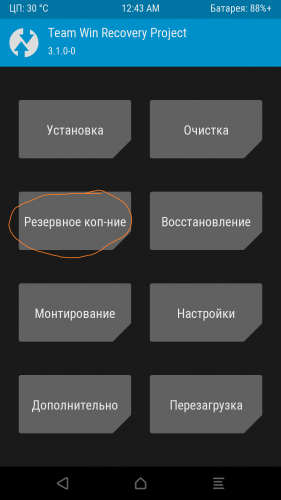
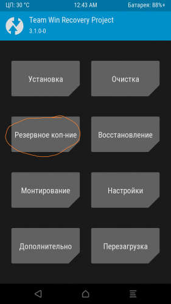
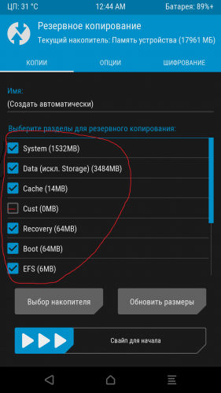
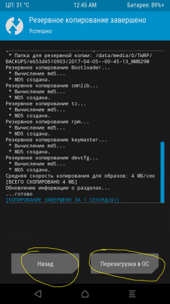
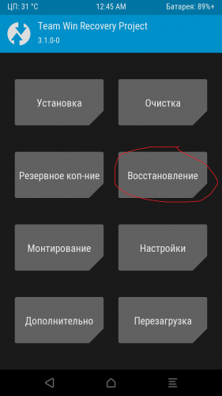
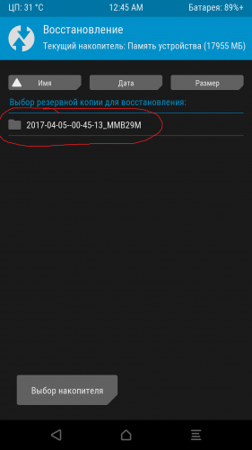
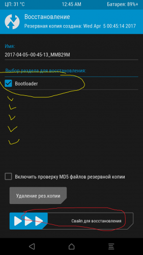

Уменьшено на 74%
Уменьшено на 74%

1080 x 1920 (113,05 КБ)
Делаем бэкап и восстановление через TWRP
http://4pda.ru/forum/index.php?showtopic=804582&st=1260#entry60081858
Многие перед установкой всяко разных вкусностей (моды, фиксы, руссификаторы, ядра и т.п.) видели и читали что автор рекомендует сделать бэкап /Backup/ Из перевода ясно что это возврат к начальной точке, т.е. сделав бэкап можно экспериментировать с прошивкой лазить и удалять системные файлы, менять их, прошивать "рискованные" моды и фиксы ну и одно из самых интересных, попробовать другую прошивку, если она не понравиться смело вернуться обратно, да и в дороге иметь бэкап всегда приятно, если вдруг слетела прошивка по ряду разных понятных и не понятных причин. При том что бэкап носить с собой можно и на носителе, не обязательно в памяти самого аппарата.
Загружаемся в рековери и как на
скриншотах
|
 1080 x 1920 (113,05 КБ) |
|
 1080 x 1920 (172,6 КБ) |
|
 1080 x 1920 (213,2 КБ) |
На первом соответственно выбираем резервное копирование, на втором выбираем пункты, основное это system, data, boot первые двое и занимают основной объем памяти, поэтому я рекомендую прожать галочки на все где есть мегабайты памяти они не займут много места. Объем памяти data может варьироваться и большую и чуть в меньшую сторону, зависит от того сколько у вас приложени установлено, зачастую вся важная и нужная нам информация храниться в этом разделе. И на конец на третьем скрине выбираем либо назад, чтобы дальше продолжить работу с рековери, либо благополучно перезагружаемся в систему.
Восстановление. Самый простой и надежный способ восстановления идем в пункт Очистка > Выборочная очистка > прожимаем Dalvik/Art Cache - System - Data - Cache > Свайп для очистки > Выходим на начальный экран и >
|
 1080 x 1920 (112,48 КБ) |
|
 1080 x 1920 (106,31 КБ) |
|
 1080 x 1920 (138,17 КБ) |
Первый скрин жмем Восстановление
Второй скрин выбирем наш бэкап (у меня он один) но их может быть несколько, рядом с каждым будет дата/время/версия прошивки
Третий скрин выбираем разделы для восстановления, в данном случае выбираем все (у меня на примере забэкаплен только бктлоудер, у вас их будет несколько см.выше резервное копирование) и свайп для восстановления.
(Было несколько постов с проблемами восстановления бэкапа, были любопытные ответы мне в кумыс возможно и в топике, решил сам проверить. Во первых если запекапить три основных пункта Boot (ядро) Sysytem (система, системные файлы) и data (пользовательский раздел, программы и т.п.) и потом их восстановить, все нормально восстанавливается и работает.
Во вторых если забэкапили все где были мегабайты то при восстановлении (в моем в проверочном варианте) выбирать нужно все кроме Efs и frimware именно на этих двух пунктах возникают ошибки.
И чтобы все подытожить, напишу что три основных раздела достаточно при восстановлении Boot Data System, а бэкапить на всякий случай все разделы с мегабайтами. Почему выдает ошибку пока не разобрался могу только грешить на кривоватость существующих под наш аппарат кастомных рековери.)